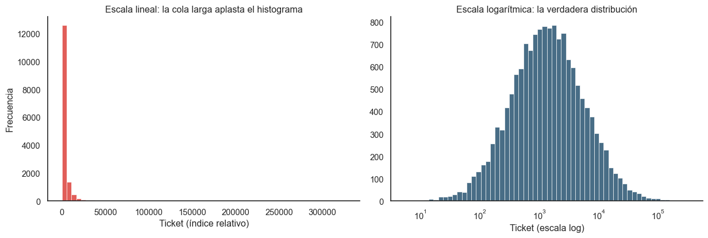

Código
import pandas as pd
import numpy as np
import matplotlib.pyplot as plt
import seaborn as sns
sns.set_theme(style="white")
COLOR_PRIMARY = "#0B3C5D"
COLOR_SECONDARY = "#D82822"
np.random.seed(42)
# Simulación que preserva el comportamiento log-normal real
n_orders = 15000
pago_total = np.random.lognormal(mean=7.2, sigma=1.4, size=n_orders)
fig, axes = plt.subplots(1, 2, figsize=(13, 4.5))
sns.histplot(pago_total, bins=60, color=COLOR_SECONDARY, edgecolor="white", ax=axes[0])
axes[0].set_title("Escala lineal: la cola larga aplasta el histograma")
axes[0].set_xlabel("Ticket (índice relativo)")
axes[0].set_ylabel("Frecuencia")
sns.histplot(pago_total, bins=60, color=COLOR_PRIMARY, edgecolor="white",
log_scale=True, ax=axes[1])
axes[1].set_title("Escala logarítmica: la verdadera distribución")
axes[1].set_xlabel("Ticket (escala log)")
axes[1].set_ylabel("")
sns.despine()
plt.tight_layout()
plt.show()